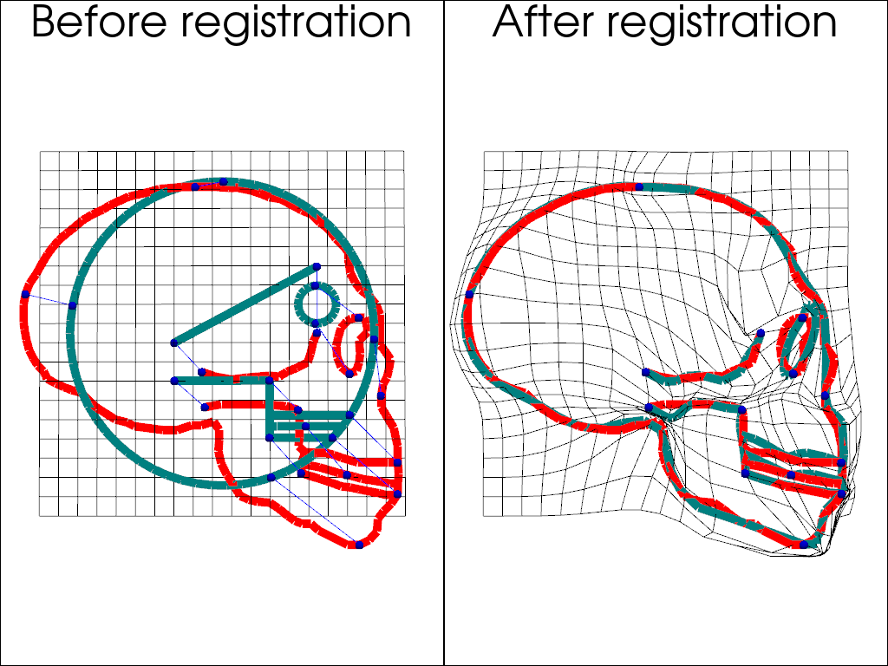

Note
Go to the end to download the full example code
Registration with LDDMM
LDDMM is a deformation method based on geodesic shooting in the space of diffeomorphisms. In scikit-shapes, LDDMM can be expressed as an ExtrinisicDeformation model with n_steps > 1 and is parametrized by a momentum vector field over a set of control points.
import sys
import pykeops
import skshapes as sks
# This is a fix for the documentation, you can remove it if you are running the code in a script
sys.path.append(pykeops.get_build_folder())
Prepare the data
source = sks.PolyData("../test_data/skulls/template.vtk")
target = sks.PolyData("../test_data/skulls/skull_neandertalis.vtk")
# Add control points to the source shape
source.control_points = source.bounding_grid(N=20, offset=0.1)
# Add landmarks to the source and target shapes
source.landmark_indices = [
94,
84,
105,
95,
106,
131,
116,
136,
68,
79,
31,
61,
47,
19,
]
target.landmark_indices = [
49,
37,
36,
29,
13,
72,
24,
0,
59,
51,
156,
103,
123,
169,
]
Apply the registration
The loss function is a combination of the landmark loss and the optimal transport loss. The model is the LDDMM model with 5 steps of discretization with a Gaussian kernel. We use a 50x50 grid as control points.
loss = sks.LandmarkLoss() + sks.OptimalTransportLoss()
model = sks.ExtrinsicDeformation(
n_steps=5, kernel="gaussian", scale=8, control_points=True
)
registration = sks.Registration(
model=model,
loss=loss,
optimizer=sks.LBFGS(),
n_iter=1,
verbose=True,
regularization_weight=0,
)
morphed = registration.fit_transform(source=source, target=target)
Initial loss : 5.18e+02
= 5.18e+02 + 0 (fidelity + regularization_weight * regularization)
Loss after 1 iteration(s) : 7.18e+00
= 7.18e+00 + 0 (fidelity + regularization_weight * regularization)
Visualize the result
import numpy as np
import pyvista as pv
source_color = "teal"
target_color = "red"
cpos = [
(-20.266633872244565, 9.52741654099364, 653.2794560673151),
(-25.034557342529297, 25.013988494873047, 0.0),
(0.0009758954196487321, 0.9997188263985942, 0.023692103586369296),
]
plotter = pv.Plotter(shape=(1, 2))
plotter.subplot(0, 0)
plotter.camera_position = cpos
plotter.add_text("Before registration", font_size=20, position="upper_edge")
plotter.add_mesh(
source.control_points.to_pyvista(), color="black", line_width=1
)
plotter.add_mesh(source.to_pyvista(), color=source_color, line_width=10)
plotter.add_mesh(target.to_pyvista(), color=target_color, line_width=10)
source_landmarks = source.landmark_points_3D.detach().cpu().numpy()
target_landmarks = target.landmark_points_3D.detach().cpu().numpy()
all_landmarks = np.concatenate([source_landmarks, target_landmarks], axis=0)
lines = []
for i in range(len(source_landmarks)):
lines.append(2)
lines.append(i)
lines.append(i + len(source_landmarks))
landmarks = pv.PolyData(all_landmarks, lines=lines)
plotter.add_mesh(landmarks, color="blue", line_width=1)
plotter.add_points(
landmarks.points,
color="blue",
point_size=10,
render_points_as_spheres=True,
)
plotter.subplot(0, 1)
plotter.camera_position = cpos
plotter.add_text("After registration", font_size=20, position="upper_edge")
plotter.add_mesh(
morphed.control_points.to_pyvista(), color="black", line_width=1
)
plotter.add_mesh(morphed.to_pyvista(), color=source_color, line_width=10)
plotter.add_mesh(target.to_pyvista(), color=target_color, line_width=10)
morphed_landmarks = morphed.landmark_points_3D.detach().cpu().numpy()
all_landmarks = np.concatenate([morphed_landmarks, target_landmarks], axis=0)
lines = []
for i in range(len(morphed_landmarks)):
lines.append(2)
lines.append(i)
lines.append(i + len(morphed_landmarks))
landmarks = pv.PolyData(all_landmarks, lines=lines)
plotter.add_mesh(landmarks, color="blue", line_width=5)
plotter.add_points(
landmarks.points,
color="blue",
point_size=10,
render_points_as_spheres=True,
)
plotter.show()

Total running time of the script: (0 minutes 5.213 seconds)